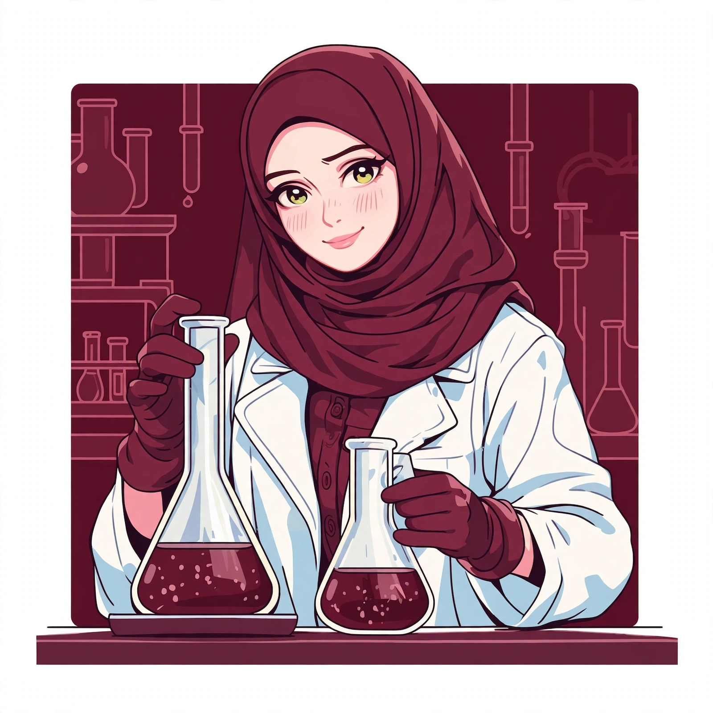

Anees Khatoon
B.S. in Forensic Chemistry and Toxicology (Silver Medalist, 2nd Position). Passionate about advanced chemical analysis, toxicology, and analytical research innovations.
About Me
Dedicated and detail-oriented forensic science graduate with hands-on internship experience at premier toxicological laboratories. Skilled in modern chromatographic techniques, spectral evaluation, and multidisciplinary scientific research. Committed to upholding justice through precise chemical and biological evidence evaluation.
Academic Background
B.S. in Forensic Chemistry and Toxicology
2021 - 2025Liaquat University of Medical & Health Sciences, Jamshoro
CGPA: 3.87/4.00 (Silver Medalist, 2nd Position among 67 students)
Experience & Internships
Forensic Intern
Chemico-Bacteriological Laboratory, Karachi | Sep 2025 - Oct 2025
Conducted chemical screening of alcohols, narcotics, and toxic agents with high analytical precision.
Forensic Toxicology Intern
Punjab Forensic Science Agency, Lahore | Nov 2024
Processed biological samples utilizing advanced extraction and instrumentation techniques including GC-MS, LC-MS, HPLC, and FTIR.
Laboratory Competencies & Tools
Get In Touch
Feel free to reach out for research collaborations, academic inquiries, or professional networking.